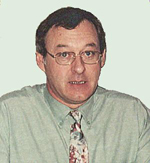
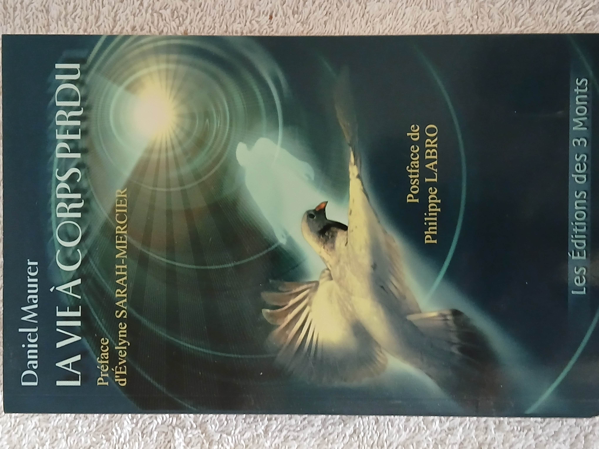
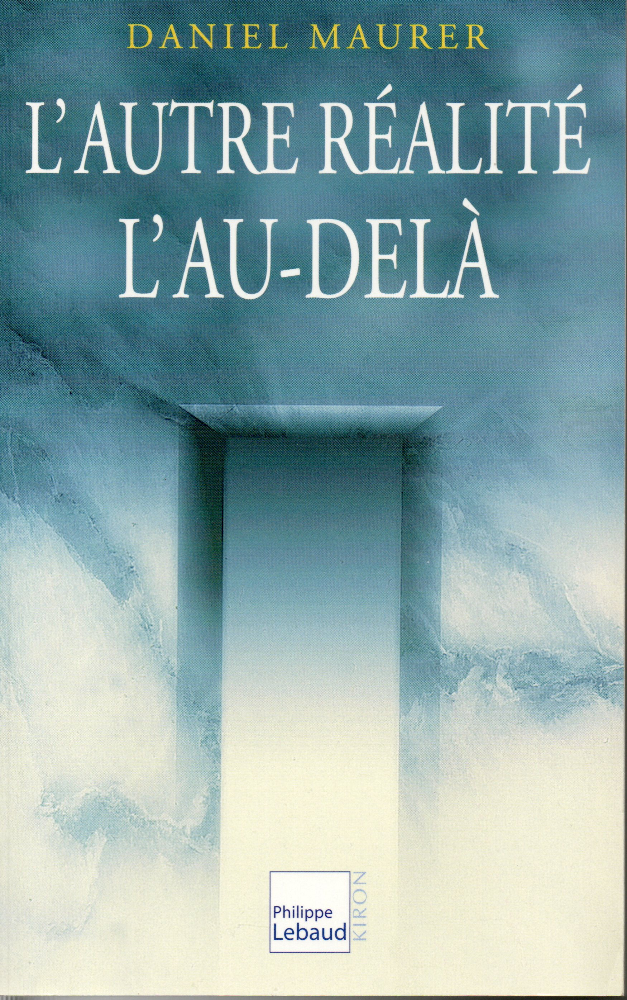
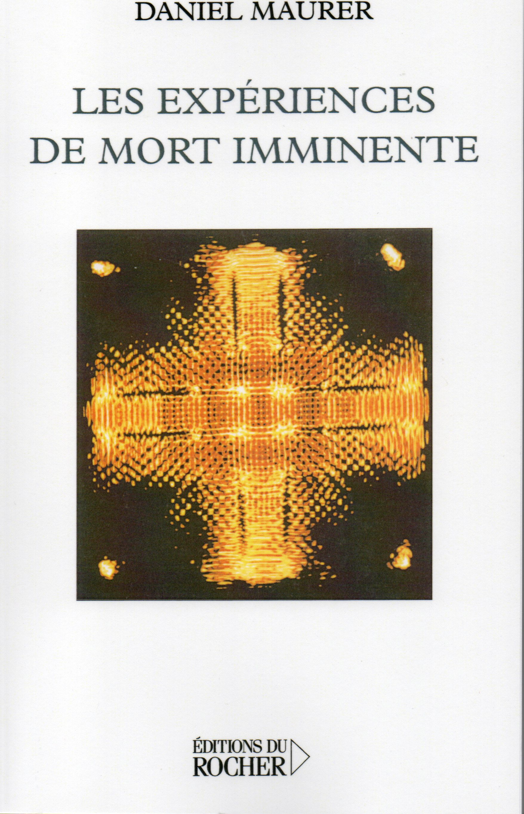
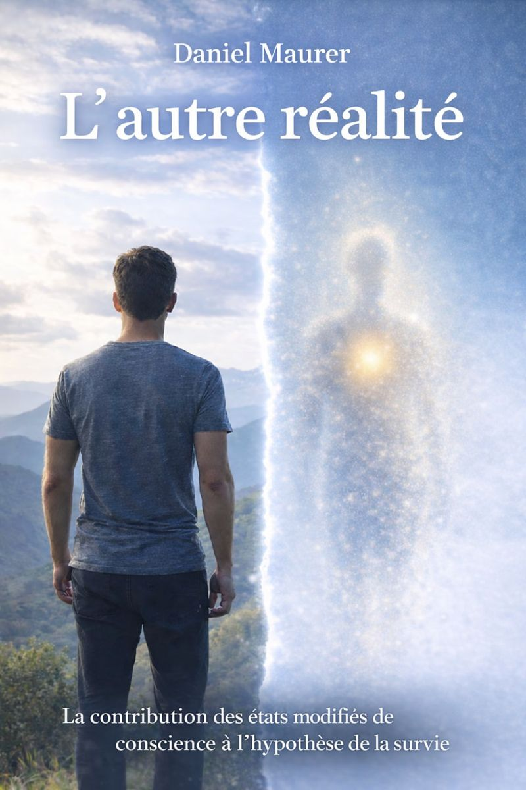
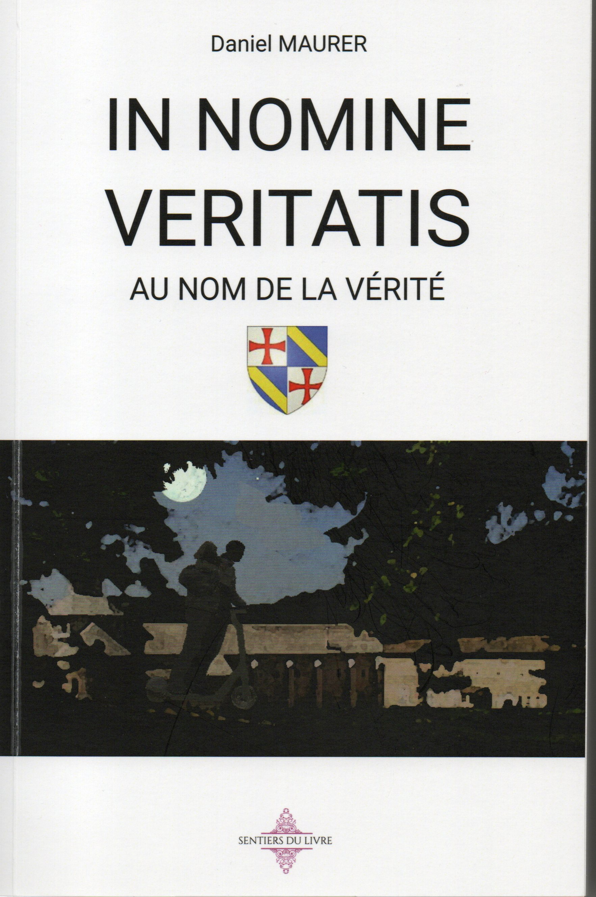

L'auteur en 2005
Présentation
Je suis né au milieu du siècle dernier, en Alsace, dans une clinique juive (Clinique Adassa à Strasbourg) d'un père protestant et d'une mère catholique ; le couple venait de se séparer. Après des études secondaires plutôt chaotiques, un concours et un diplôme plus tard, je deviens infirmier dans un hôpital psychiatrique du sud de la France.
En 1984, un proche me raconte une expérience déroutante : alors qu’il se reposait sur son lit, il s'est retrouvé soudain collé au plafond de sa chambre, d'où il observe son corps allongé. Puis il est aspiré vers une lumière d’une intensité inouïe, etc. — Un truc de fou, me dit-il.
Il me demande si le phénomène qu'il a vécu relève d’une pathologie psychiatrique. Je ne sais quoi répondre. Intrigué, je me mets à chercher, à me documenter, à questionner des spécialistes. Un beau matin, le hasard met entre mes mains le livre de Raymond Moody " La vie après la vie ". Le lien s’impose : il s’agissait d’une Near Death Experience (NDE). À l’époque, en France, aucun ouvrage n'a encore abordé le thème. Ce n'est que dix-sept années plus tard que paraît " La vie à corps perdu " (2001), premier ouvrage français proposant une réflexion personnelle et structurée sur ce phénomène, auquel je restitue son appellation d’origine : Expérience de Mort Imminente (EMI), terme forgé à la fin du XIXᵉ siècle par le philosophe Victor Egger. Trois essais suivront en 2002, 2005 et 2007. En 2026, après une longue pause, je m'essaie à l’écriture de romans avec " Au nom de la vérité " et " Un souffle d’éternité ".
Romans récents

Et si l’immortalité devenait réalité ? Émeline et Sébastien Masson, brillants chercheurs en génomique, font une découverte qui pourrait éradiquer le cancer et prolonger la vie humaine indéfiniment. Une avancée sans précédent… et un pouvoir capable de boule-verser le monde. Mais cette révélation vertigineuse attire les convoitises les plus dangereuses. Pour protéger leur secret et pour-suivre leurs recherches, les deux scientifiques sont transfé-rés dans une ancienne base militaire ultra-sécurisée. Entre manipulations, intrigues internationales et forces obscures prêtes à tout pour s’emparer de leur découverte, le couple se retrouve au cœur d’un suspense haletant : l’immortalité restera-t-elle un privilège réservé ou pourra-t-elle devenir accessible à tous ? Plongez dans un thriller scientifique captivant où géné-tique, pouvoir et ambition se mêlent dans une course contre le temps.
Une organisation templière, dirigée en sous-main par un membre du gouvernement, confie une mission délicate à un couple de détectives privés : Justine et Antoine. Leur objectif est de retrouver les trois rouleaux d’un ancien parchemin dont la reconstitution pourrait ébranler les fondements mêmes de notre civilisation et provoquer des troubles majeurs à l’échelle mondiale ; par ailleurs, l’anéantissement de l’Ordre des chevaliers du Temple est directement lié au contenu de ce document. L’enquête débute à Paris, se poursuit en Alsace puis en Provence, avant de s’achever sur la côte méditerranéenne espagnole. Au fil des péripéties, déjouant les traquenards, les deux enquêteurs parviennent à mettre la main sur les trois parties du document. Ils ignorent que la DGSE assure une protection discrète, mais efficace, car les services secrets d’une puissance étrangère convoitent eux aussi ces parchemins. Extrêmement fragiles, ils ne peuvent être ni manipulés ni déroulés sans risquer leur destruction. Les plus hautes autorités, qui suivent l’affaire depuis ses débuts, décident alors de confier les trois rouleaux de parchemin au laboratoire de physique nucléaire du CEA de Saclay. Grâce à un scanner de dernière génération, le texte enfoui depuis des siècles est enfin révélé, laissant entrevoir une vérité capable de bouleverser l’ordre établi…
Essais

LA VIE À CORPS PERDU est un essai consacré aux Expériences de Mort Imminente, EMI (ou NDE, de l'anglais Near Death Experience). Les personnes qui ont vécu ce phé-nomène, à l'approche d'un danger mortel ou dans des contextes moins dramatiques, nous parlent de sortie hors du corps, de passage dans un tunnel, de rencontre avec des proches défunts, d'une lumière d'amour infini, etc. Pour qui accepte de les entendre, ces témoignages ne manquent pas de ressusciter ce vieux rêve d'immortalité que nos sociétés répriment sous une épaisse chape de rationalisme. Devant la somme d'indices que les EMI mettent à notre disposition, la perspective d'une forme de survie de la conscience s'avère pourtant une hypothèse aussi légitime que la croyance dans une néantisation absolue. S'il n'est pas encore objet de science, à proprement parler, le thème des EMI n'en est pas moins objet de connaissance. A ce titre il mérite davantage qu'un mépris scientiste, peu favorable au progrès de la Pensée, ou qu'une suffisance ésotériste limitée à un catalogue de considérations fumeuses et invérifiables. Ce sujet délicat, plus controversé que jamais, est traité ici avec la meilleure objectivité. Pour autant, l'auteur ne se réfugie pas derrière une prudente neutralité, bien au contraire.

L’au-delà fait toujours l’objet de nombreux livres avec un succès constant. Désormais, en contrepoint des croyances religieuses, se développe une approche de plus en plus scientifique qui ne laisse personne indifférent, pas même les plus sceptiques. Si le domaine de la réalité accessible à nos sens est universellement admis, Daniel Maurer nous montre que cette réalité ordinaire n’est que la partie manifeste d’une réalité infiniment plus vaste. Une autre réalité que nous expérimentons journellement, à de nombreuses reprises, le plus souvent de façon involontaire. Car nous possédons la remarquable aptitude de nous abstraire de l’état de conscience ordinaire pour vivre en état modifié de conscience, sur le versant de la réalité extra-ordinaire. L’hypnose, la méditation, la transe, les rêves, les vécus à l'approche de la mort, les drogues hallucinogènes permettent de mieux appréhender le phénomène. Leur étude, complétée par d’abondants témoignages, a conduit l’auteur à envisager l’autonomie de la conscience comme une hypothèse particulièrement solide. Cette autonomie deviendrait définitive au moment de la mort, comme le suggère sa minutieuse investigation sur le thème des expériences de mort imminente. L’objectif de ce livre est d’apporter de nouveaux éléments de réflexion au vaste débat sur l’après-vie. Si des indices font apparaître que la conscience s’avère capable de se séparer du corps durant la vie, il sera permis d’en déduire qu’elle peut en faire tout autant au moment de la mort.

Des médecins cardiologues, neurologues, réanimateurs ont découvert récemment que la conscience de patients que l’on avait cru morts était restée opérationnelle. Mais elle était restée opérationnelle hors de leur corps ! Elle lui avait survécu en dépit du constat de l’arrêt du cœur, de la respiration et de toute activité du cerveau. En effet, une fois réanimés, ces rescapés ont décrit dans le détail ce qu’ils avaient observé de l’intervention médicale intervenue au cours de leur mort présumée. Des récits corroborés par les témoins, médecins, infirmiers, aides-soignants, présents sur les lieux. Ces prodiges ne manquent pas d’interroger : Quel est le statut exact de la conscience ? Se trouve-t-elle vraiment dans le corps ? Comment peut-elle rester active une fois le cerveau « éteint » ? Lui survit-elle ? Questions d’autant plus actuelles que des comptes rendus médicaux, faisant suite à des enquêtes de grande ampleur, incitent à penser que la conscience survit à l’arrêt du cœur et du cerveau. Les auteurs allant jusqu’à suggérer qu’elle n’est pas enfermée dans le corps ! Et c’est à un constat du même ordre qu’aboutissent les travaux de certains neurologues spécialistes des états méditatifs. Soutenir l’hypothèse de la survie n’est certainement pas faire le lit d’une régression de la pensée, comme le prétendent les « gens de raison ». En persévérant à nier sa pertinence, ceux-là courent le risque de rater une marche de l’ascension vers la vérité. Ces dernières années, des études scientifiques irréprochables ont fourni de nouveaux indices. Des indices décisifs mais hélas ignorés du grand public, voire des scientifiques directement concernés. Une lacune que ce livre se propose de combler.

Ce livre est une réédition augmentée de " L'autre réalité - L'au-delà ".
Depuis plus d’un siècle, la science explore une réalité qui ne cesse de lui résister. Du monde quantique aux structures du cosmos, ses découvertes mettent en lumière des paradoxes qui interrogent nos certitudes les plus fondamentales. Les travaux consacrés aux états modifiés de conscience prolongent ce questionnement : la réalité que nous percevons par nos sens n’est peut-être que la partie émergée d’un ensemble infiniment plus vaste. Hypnose, méditation, transe, rêve ou expériences induites par des substances hallucinogènes révèlent, lorsqu’elles sont étudiées avec méthode, une singulière autonomie de la conscience à l’égard du corps. Une autonomie qui semble s’exprimer avec une intensité particulière à l’approche de la mort. Ces observations, longtemps marginales, s’appuient aujourd’hui sur un corpus de données suffisamment consistant pour que des chercheurs envisagent sérieusement l’hypothèse d’une survie de la conscience.
Roman corrigé et remanié

Ce livre de 514 pages a fait l'objet d'une édition en 2023. A la relecture, de nombreuses fautes, lourdeurs et autres défauts m'ont contraint à récupérer mes droits. De ce fait la publication a été arrêtée. J'ai repris l'ensemble du texte, l'ai corrigé et réorganisé afin de rendre la lecture plus fluide. Puis le titre a laissé place au sous-titre : Au nom de la vérité (voir en haut de page) publié en mars 2026 par Librinova.